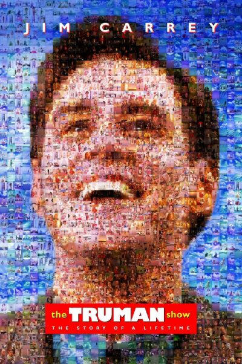
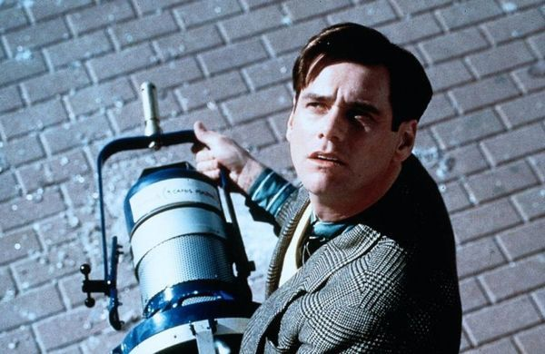
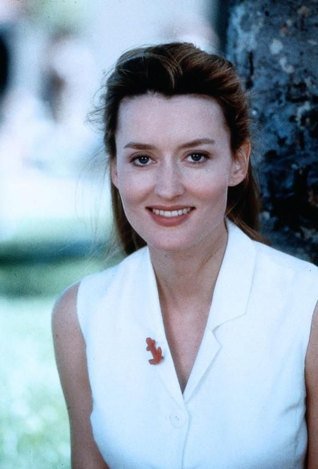
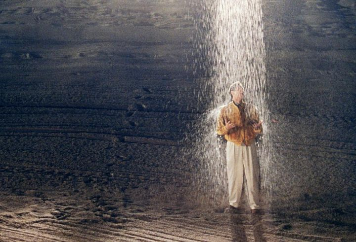
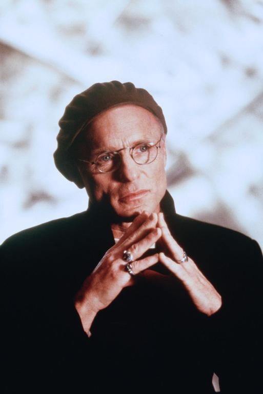
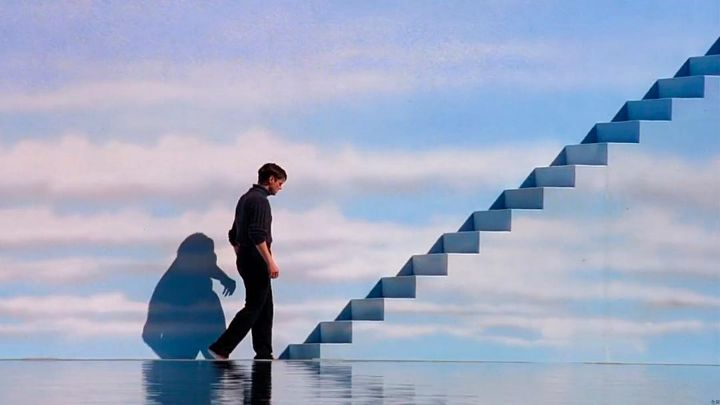

一个晴朗的早晨，天上掉下来一盏灯。它砸在桃源岛整洁的街道上，外壳上贴着标签：天狼星。广播立刻圆场：一架飞机在高空解体，掉落了零件。楚门·伯班克捡起这颗"坠落的星星"看了看，耸耸肩，照常去上班。三十年来，他的天空第一次掉下一块布景——完美世界的第一道裂缝，是从天上开始的。

设定早已家喻户晓，但值得重新数一遍它的狠：楚门是史上第一个被公司合法领养的婴儿，从出生起就活在一档全天候直播的真人秀里。他的小镇是好莱坞最大的摄影棚，头顶的蓝天是穹顶，海是水池，月亮是导演的控制室；五千台隐藏摄像机全年无休，他的父母、妻子、挚友、路人，全是拿薪水的演员——全世界都知道这件事，除了他。这场骗局的总设计师叫克里斯托弗，Christof。编剧起这个名字时显然在冷笑：Christ-of，一个从"基督"里仿制出来的头衔。他住在人造月亮里，俯瞰他造的世界，调度日出与暴雨——一个自封的神。
牢笼的工程学精密得让人脊背发凉。为了让楚门不离开小镇，节目组在他童年安排了一场海难，让"父亲"在他眼前溺亡——恐水症从此替穹顶看守海岸线。妻子美露是植入广告的活道具，紧张时也不忘举着可可粉念广告词；挚友马龙在每个关键时刻搬来一箱啤酒，坐在桥头说"我最不可能骗你"——而这句话，是导演通过耳机一字一句喂给他的。连怀旧都被剧本化：死去三十年的"父亲"按台本归来，上演认亲的一幕，配乐煽情，全球观众哭成一片。这套体系里最不寒而栗的不是导演，是屏幕外的我们——数十亿人看了三十年，广告商赞助了三十年，没有多少人觉得哪里不对。楚门的牢房是全人类合资修建的。

只有一个人试图说真话。群众演员劳伦——真名希尔维亚——在图书馆外对楚门动了真心，把他带到海滩，语无伦次地想在两分钟内告诉他一切：这都是假的，天是假的，人人都在演。她话没说完就被人拖走，"父亲"把她塞进车里，说全家要搬去斐济。此后楚门保留了两样东西：一件她的红毛衣，和一个用杂志美人碎片拼贴她面容的秘密习惯。希尔维亚在棚外加入了"解放楚门"运动，胸前别着那枚著名的徽章：它会怎么结束？——对真实的乡愁是拼不完整的，但足以让人在一个量身定做的天堂里，夜夜失眠。

裂缝越来越多。雨可以只下在他一个人头上，像一朵私人订制的乌云；车载电台串了频，播音员逐条报出他的行车路线；他临时闯进一栋写字楼，电梯门后是后台和喝咖啡的场务。楚门的觉醒没有任何超能力成分，他做的只是一件事：诚实地对待细节，不再替这个世界圆谎。这大概是影片留给每个观众的第一课——骗局的維持，从来需要被骗者的配合。

而克里斯托弗这个假神，值得单独解剖。在穹顶之内，他近乎全知全能：他看得见楚门的每一个表情，调得动这个世界的天气与人事。可他与真神的差别不在能力，在目的。保罗在雅典对着满城偶像说过："创造宇宙和其中万物的神……不住人手所造的殿……他离我们各人不远，我们生活、动作、存留，都在乎他。"（使徒行传 17:24–28）请注意这段话的方向：真神的无处不在，是"要叫他们寻求神，或者可以揣摩而得"——他的全在是为了被找到；克里斯托弗的全在恰恰相反，是为了永远不被发现。真神造门，假神造墙；真神给自由，甘冒被拒绝的险，假神给幸福，条件是你永远别醒；真神要的是爱，假神要的是收视率。一切操控型的爱——不管它自称父爱、体制还是算法——都是克里斯托弗的亲戚。
于是有了那次伟大的出逃。摄像机找不到楚门了——他在地下室挖了洞，留了个假人。五千个镜头翻遍全城，最后在海上找到他：那个被恐水症看守了三十年的人，驾着一条叫"圣玛利亚号"的帆船，向着天边驶去。克里斯托弗做了假神在暴露边缘都会做的事：加大恐吓的剂量。人工风暴劈头砸下，帆船倾覆，楚门呛着水把自己绑在船上，向天嘶喊：你想拦住我，就杀了我！风暴停了——收视率之神终究不敢弄死他的台柱。然后是影史上最安静的巨响：船头"咚"的一声，刺进了天空。蓝天是一面布景板。楚门伸出手，摸着他的"苍穹"，沿着墙走到一段台阶前——台阶顶端，一扇小门，上面写着：EXIT。

这时天上传来了声音。克里斯托弗坐在月亮里，通过环绕立体声向他的造物说话——这是全片最亵渎也最诚实的一幕，一场山寨的神显。他说：我是创造者；外面的世界和我给你的世界一样虚伪，一样多谎言，但在我的世界里你什么都不用怕；你是真实的，所以人们才爱看你。这套挽留词值得细读，因为它是一切穹顶对一切楚门的标准话术：外面不会更好，里面至少安全。楚门站在门前的黑暗里，想了想，给出了他的回答——那句他说了三十年的招牌台词，此刻头一次由他自己选择说出：假如再也见不到你，祝你早安，午安，晚安。然后鞠躬，谢幕，走进门后的黑暗。耶稣说过："你们必晓得真理，真理必叫你们得以自由。"（约翰福音 8:32）楚门选的不是更舒适的世界——门外那个世界确实一样多谎言——他选的是真实，并甘愿为它付自由的全价：放弃一座量身定做的天堂。
最深的讽刺留在名字里。那个名字里带着"基督"的人，一生的事业是造墙、藏门、把一个人圈养在假天堂里；而真的基督说的是："我就是门；凡从我进来的，必然得救。"（约翰福音 10:9）假神把门伪装成天空，真神把自己做成了门。方向也整个是反的：克里斯托弗从"天上"向下广播，动员一切让人留在棚里；基督却离开真正的天，走进人间这座片场，在里面生、在里面死，为的是从里面把门打开。楚门走出去的时候，门外没有人接他——这是电影的诚实，它不敢许诺门外有什么；福音敢：门外站着的不是虚空，是那位为开门被钉死的。还有结尾那两个保安，楚门前脚出门，他们后脚就问：还有什么好看的？换台吧。——世界的爱就是这样，收视率式的，散场即忘；而圣经里那位的目光，从不换台。
看完这部一九九八年的电影，最难回避的是它的预言性：今天我们每个人都住着一座自己的桃源岛——由偏好定制、被算法投喂、四面是让人舒适的墙。希尔维亚徽章上的问题，其实是问给每个观众的：它会怎么结束？电影的答案是一扇写着 EXIT 的门和门后的未知；福音的答案多给了一样东西——门后有一位等着的。到那时要说的就不再是楚门的告别词了。早安、午安、晚安，是献给假神的客套；对那位真实的，人只需要说一句更简单的话：我出来了，我回家。